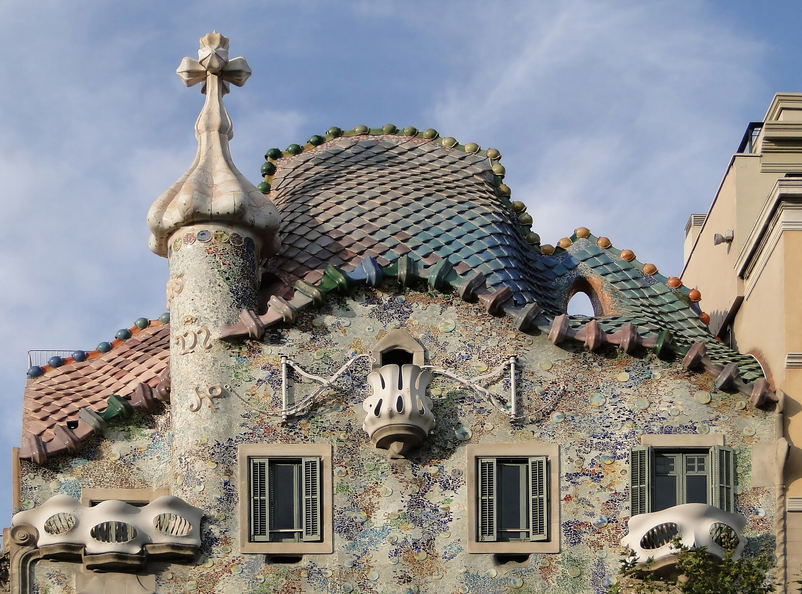

Foto: Bernard Gagnon · CC BY-SA 3.0 · Wikimedia Commons
Casa Batlló
Durata consigliata: 1,5 oreLa casa più onirica di Gaudí sul Passeig de Gràcia. Facciata a scaglie che evoca la pelle di un drago, balconi a forma di maschera, nessuna linea retta. All'interno il ticket Gold include tablet in realtà aumentata, la scala interna a vortice color oceano e la terrazza sul tetto con i camini mosaicati. Un'immersione totale nell'immaginario naturalistico gaudiano.
Dritte pratiche: il ticket Gold evita le code e dà accesso a più zone. Vacci presto (apertura ore 10) per trovare meno gente. All'esterno, fotografa anche la vicina Casa Amatller, di stile diverso.